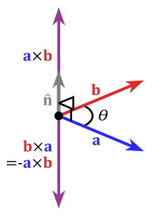

| xprod {matlib} | R Documentation |
Given two linearly independent length 3 vectors **a** and **b**, the cross product, \mathbf{a} \times \mathbf{b} (read "a cross b"), is a vector that is perpendicular to both **a** and **b** thus normal to the plane containing them.
xprod(...)
... |
N-1 linearly independent vectors of the same length, N. |
A generalization of this idea applies to two or more dimensional vectors.
See: [https://en.wikipedia.org/wiki/Cross_product] for geometric and algebraic properties. 
Returns the generalized vector cross-product, a vector of length N.
Matthew Lundberg, in a [Stack Overflow post][https://stackoverflow.com/questions/36798301/r-compute-cross-product-of-vectors-physics]
xprod(1:3, 4:6) # This works for an dimension xprod(c(0,1)) # 2d xprod(c(1,0,0), c(0,1,0)) # 3d xprod(c(1,1,1), c(0,1,0)) # 3d xprod(c(1,0,0,0), c(0,1,0,0), c(0,0,1,0)) # 4d